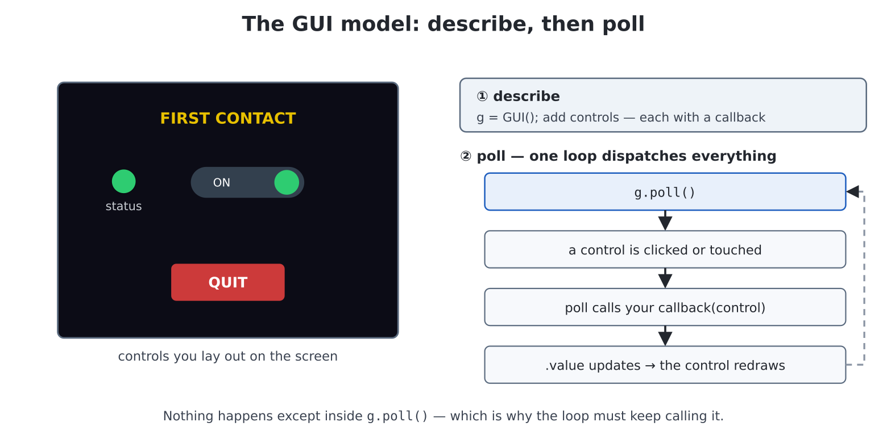

Welcome to Part V. The games are shipped; now the machine becomes an
appliance-maker — clocks, control panels, jukeboxes,
lab instruments. Applications differ from games in temperament: a game
redraws a hurtling world sixty times a second; an app mostly
waits, springing to life when a human touches something. That
is chapter 21’s third philosophy — events — given a whole toolkit:
pcgui, MMBasic’s GUI controls reborn as
Python objects. Buttons, sliders, gauges, text boxes with pop-up
keyboards — you describe a screen once, then ask it to listen.
Every pcgui program has the same four movements — mode,
manager, controls, loop. Here is the smallest real one;
edit("hello_gui.py"):
import time
import pcgui
screen(hdmi.RGB320) # chunky pixels suit fingers
time.sleep(3)
# REPL prints stay off the GUI screen
console("serial")
hdmi.fb().fill(0)
# the manager: owns, draws, dispatches
g = pcgui.GUI()
# borrow the keyboard (for text boxes)
g.start()
done = [False]
g.caption(100, 10, "FIRST CONTACT", fg=YELLOW, font=2)
lamp = g.led(60, 80, 10, "status", GREEN)
def flip(sw):
lamp.value = sw.value
def quit_app(b):
done[0] = True
g.switch(120, 66, 90, 28, "ON|OFF", callback=flip)
g.button(110, 180, 100, 30, "QUIT", fg=WHITE, bg=RED,
callback=quit_app)
try:
while not done[0]:
g.poll() # everything happens in here
time.sleep_ms(10)
finally:
g.stop() # give the keyboard back
console()Click the switch (mouse or touch — both just work) and the lamp follows. Now the anatomy, because these thirty lines carry the whole paradigm:
lamp),
made by factory methods on the manager. Read or set any of them through
.value — assigning redraws, so
lamp.value = sw.value is the whole wiring.poll() calls your function with that control as the
argument: flip(sw) reads the switch it was given. No
mystery threads: nothing happens except inside g.poll(),
which is why the loop must keep calling it.done = [False] trick deserves its
footnote: a callback needs to change a variable it doesn’t own,
and chapter 11’s sealed room forbids assigning outer names. A
one-element list sneaks past — done[0] = True doesn’t
reassign the name, it edits the list’s contents. It’s the
standard idiom for small GUI programs (the honest alternative is a class
holding the app’s state — experiment 4 goes there).console("serial") keeps stray prints
off the interface (they’d land on your buttons — and serial
means you can still watch debug output from the USB-C terminal, chapter
19’s rig), while the finally returns keyboard and console.
The GUI collar.
Coming from MMBasic: these are the Micromite Plus GUI controls, control for control — but
CTRLVAL(ref)is nowcontrol.value,GUI INTERRUPTisg.on_touch(...), andGUI CURSORis thepccursormodule (with the same two built-in pointers). The set and behaviour match; the drawing is this machine’s own.
pccursorOne courtesy in the demo happened by itself: plug in a
mouse and g.start() summons an arrow that
glides over the controls. It matters more than it looks —
mouse("X") tells your program where the cursor is,
but only a visible pointer tells the user; without one, clicks
land at coordinates nobody can see. Touch users never meet it (no mouse,
no arrow), g.start(cursor=False) opts out, and
g.poll() keeps it refreshed — inside a GUI there is nothing
to do.
Outside pcgui, the pointer is a module of its own —
MMBasic’s GUI CURSOR — and any mouse-driven program can
borrow it. It is a save-under sprite: the pixels
beneath the pointer are saved before it draws and restored as it moves,
so it floats over any screen without damage — chapter 21’s hand-built
sprite cursor, as a service. The working set:
| Call | Effect |
|---|---|
pccursor.on(shape, colour) |
show it — pccursor.ARROW (hot point at the tip) or
pccursor.CROSS (centre) |
pccursor.refresh() |
follow the mouse — once per loop pass |
pccursor.erase() |
lift it before you draw underneath (next refresh()
repaints) |
pccursor.move(x, y) / pos() |
steer it by code / read the hot point |
pccursor.off() |
remove it and restore the screen |
And the one trap, demonstrated so you never meet it in the wild: the
save-under holds whatever was beneath the pointer when it was
drawn. Draw new pixels under a shown pointer and the next move
faithfully restores the old pixels over your work — a ghost.
The cure is erase() before drawing near it. A complete
sticker-stamper; edit("stamper.py"):
import time
import keyboard
import pccursor
def held(code):
for i in range(1, keydown(0) + 1):
if keydown(i) == code:
return True
return False
screen(hdmi.RGB640)
time.sleep(3)
d = hdmi.fb()
d.fill(d.colour(0x103028))
hdmi.text("click to stamp -- ESC quits", 8, 8, d.colour(GRAY))
console("none")
pccursor.on(pccursor.CROSS, colour=CYAN)
click_was = True
try:
while not held(keyboard.ESC):
pccursor.refresh()
click_now = mouse("L") == 1
# just-pressed (ch 25)
if click_now and not click_was:
# lift it -- no ghosts
pccursor.erase()
d.ellipse(mouse("X"), mouse("Y"), 6, 6,
d.colour(GOLD), True)
click_was = click_now
time.sleep_ms(10)
finally:
pccursor.off()
console()Comment out the pccursor.erase() line and stamp a few
times to see the ghost with your own eyes — cheap immunisation, chapter
13 style. (Chapter 21’s paint program built this pointer by hand with
the sprite engine; now you know both roads, and which one is
shorter.)
You met switch, LED, caption, button. The rest, grouped by job (full signatures: User Manual, section 5):
gauge (a dial),
bargauge, displaybox (read-only text — set
.value), frame (a titled grouping box).slider,
spinner (number with up/down arrows),
checkbox, radio (share a group=
and they become exclusive).textbox and
numberbox — and here is the toolkit’s quiet masterpiece:
tapping one pops up an on-screen keyboard or keypad, so a bare
touch panel is a complete input device. A USB keyboard types into them
too. .number reads a numberbox as a float; callbacks fire
on commit (OK/Enter).listbox — scrolling,
draggable, .value the index and .text the
string.area, an invisible touch
surface (its callback gets touch positions — a doodle pad in one
control), and g.on_touch(down=..., move=..., up=...) for
global gestures.Layout advice that outlives any toolkit: sketch on squared paper
first; align to a grid (multiples of 8 read as designed); group
with frames; and pick the mode for the finger or the mouse
— RGB320 makes fat, touchable targets, RGB640
suits dense mouse-driven panels.
The classic first app, and secretly a chapter 22 state machine in a
suit. Watch two techniques especially: the button grid built
from data (chapter 10’s machinery/data split applied to layout)
and the loop-capture trap it forces you to meet.
edit("calc.py"):
import time
import pcgui
screen(hdmi.RGB320)
time.sleep(3)
console("serial")
hdmi.fb().fill(0)
g = pcgui.GUI()
g.start()
done = [False]
disp = g.displaybox(20, 12, 280, 36, "0", font=3)
entry = ["0"] # what's being typed
acc = [None] # the running total
op = [None] # the pending operator
# next digit starts a new number
fresh = [True]
def show(text):
disp.value = text[:14]
def calc(a, o, b):
try:
if o == "+":
r = a + b
elif o == "-":
r = a - b
elif o == "x":
r = a * b
else:
r = a / b
except ZeroDivisionError:
return None
return r
def fmt(x):
if x is None:
return "Err"
if x == int(x):
return str(int(x))
return f"{x:.6f}".rstrip("0")
def press(c):
if c == "C":
entry[0], acc[0], op[0], fresh[0] = "0", None, None, True
elif c in "0123456789.":
if fresh[0]:
entry[0], fresh[0] = "", False
if c != "." or "." not in entry[0]:
entry[0] += c
entry[0] = entry[0] or "0"
elif c in "+-x/":
if op[0] is not None and not fresh[0]:
acc[0] = calc(acc[0], op[0], float(entry[0]))
entry[0] = fmt(acc[0])
elif acc[0] is None:
acc[0] = float(entry[0])
op[0] = c
fresh[0] = True
# a division just blew up
if acc[0] is None:
entry[0], op[0] = "Err", None
elif c == "=" and op[0] is not None and not fresh[0]:
acc[0] = calc(acc[0], op[0], float(entry[0]))
entry[0] = fmt(acc[0])
acc[0], op[0], fresh[0] = None, None, True
show(entry[0])
beep(660, 8)
def power_off(b):
done[0] = True
ROWS = ["789/", "456x", "123-", "C0.+"]
for r, row in enumerate(ROWS):
for cidx, ch in enumerate(row):
g.button(20 + cidx * 72, 64 + r * 40, 62, 32, ch, font=2,
callback=lambda b, c=ch: press(c))
g.button(236, 184, 62, 32, "=", font=2, bg=COBALT,
callback=lambda b: press("="))
g.button(236, 64, 62, 32, "OFF", fg=WHITE, bg=RED,
callback=power_off)
try:
while not done[0]:
g.poll()
time.sleep_ms(10)
finally:
g.stop()
console()A working calculator — chain sums (7 + 3 x 2 = works the
way cheap calculators do, left to right), a decimal point that refuses
seconds, and division by zero politely showing Err (chapter
13, still on duty). The dissection:
ROWS is the
keypad; the double loop manufactures sixteen buttons. Rearranging the
calculator is editing a list of strings — by now this reflex should feel
like home.callback=lambda b, c=ch: press(c) —
stop at that c=ch, because omitting it is one of Python’s
most famous traps. A lambda looks its variables up when called,
not when made: sixteen plain lambda b: press(ch) would all
find ch’s final value — every button a +. The
default argument c=ch is evaluated at creation,
freezing each button’s own character in. One comma, the difference
between a keypad and modern art; meet it here, on purpose, before it
meets you.entry, acc, op,
fresh) for the same sealed-room reason as done
— callbacks must mutate them. (Chapter 14 would make this a class with
attributes and methods, and honestly at four state variables it’s earned
— that refactor is experiment 4.)fresh is a state flag; each button class is an event. You
built this machine three chapters ago wearing a spaceship.Chapter 26 promised your games a settings screen; here it is as a
reusable pattern — controls bound to a dict, loaded and saved with
chapter 12 — and it’s the shape of every configuration panel you’ll ever
build. edit("prefs.py"):
import time
import pcgui
PREFS = "/prefs.txt"
DEFAULTS = {"sound": 1, "flash": 1, "volume": 70, "level": 2}
def load_prefs():
prefs = dict(DEFAULTS)
try:
with open(PREFS) as f:
for line in f:
key, _, val = line.strip().partition("=")
if key in prefs:
prefs[key] = int(val)
except (OSError, ValueError):
# missing or mangled: defaults stand
pass
return prefs
def save_prefs(prefs):
with open(PREFS, "w") as f:
for key, val in prefs.items():
f.write(f"{key}={val}\n")
prefs = load_prefs()
screen(hdmi.RGB320)
time.sleep(3)
console("serial")
hdmi.fb().fill(0)
g = pcgui.GUI()
g.start()
done = [False]
def setter(key):
"""Make a callback that files a control's value under
`key`."""
def apply(c):
prefs[key] = c.value
return apply
def chooser(key, val):
"""Make a callback that files the fixed `val` (for radio
buttons)."""
def apply(c):
prefs[key] = val
return apply
def quit_app(b):
done[0] = True
g.caption(90, 8, "GAME SETTINGS", fg=GOLD, font=2)
g.frame(12, 34, 296, 74, "Effects")
g.switch(24, 52, 80, 24, "ON|OFF", value=prefs["sound"],
callback=setter("sound"))
g.caption(110, 58, "sound")
g.switch(24, 80, 80, 24, "ON|OFF", value=prefs["flash"],
callback=setter("flash"))
g.caption(110, 86, "screen flash")
g.frame(12, 114, 296, 52, "Volume")
vol = g.slider(24, 134, 200, 20, value=prefs["volume"], lo=0,
hi=100,
callback=setter("volume"))
g.bargauge(240, 134, 56, 20, value=prefs["volume"], lo=0, hi=100,
fg=GREEN)
g.frame(12, 172, 200, 60, "Difficulty")
for i, name in enumerate(("easy", "normal", "fierce")):
g.radio(28 + i * 62, 200, 8, name, group=1,
value=1 if prefs["level"] == i + 1 else 0,
callback=chooser("level", i + 1))
saved = g.caption(226, 180, "", fg=GREEN)
def do_save(b):
save_prefs(prefs)
saved.value = "saved!"
beep(880, 40)
g.button(224, 196, 84, 30, "SAVE", fg=WHITE, bg=COBALT,
callback=do_save)
g.button(12, 4, 56, 24, "EXIT", callback=quit_app)
try:
while not done[0]:
g.poll()
time.sleep_ms(10)
finally:
g.stop()
console()
print("prefs:", prefs)Flip things, save, EXIT, run again — the switches wake up
remembering. Two patterns to take away. First,
setter() and chooser() are callback
factories — a function whose whole job is to build a
callback and hand it back. One three-line factory replaces eight
hand-written handlers, and each callback carries its key sealed inside
(no loop-capture trap, because the factory’s parameter froze it — the
same trick as the calculator’s c=ch earlier in this
chapter). Second, the round trip:
load_prefs() seeds the controls’ initial
value=s; every callback edits the dict, not
scattered variables; SAVE serialises the dict. Controls are a
view of the data, never the home of it — the GUI cousin of
chapter 25’s derive-don’t-store. (Note partition("=")
quietly improving on split — it never raises on a mangled
line — and the except (OSError, ValueError) making both
no file and broken file into non-events.) Your games
now read prefs.txt at boot with ten of these lines, and
chapter 26’s accessibility flag has a home.
M+, MR,
MC buttons and a little LED that lights while memory holds
something. (Where does the number live? You know the idiom now.)area covering half the screen, its
callback drawing dots at .value‘s coordinates with
hdmi.fb() — plus a colour listbox and a CLEAR
button. Chapter 21’s paint, rebuilt in twenty GUI lines; compare the two
programs’ shapes.Calc class (entry, acc,
op, fresh as attributes; press a
method) and watch every [0] disappear. Chapter 14’s pitch,
proven on real clutter.ticks_diff), set a gauge to
len(os.listdir("/")) or the seconds from
gettime() — the GUI-plus-background-work pattern every
instrument in Part V uses.listbox of
/sd’s music files (chapter 16’s endswith
filter), PLAY/STOP buttons, the volume slider, and a caption showing
play()’s returned title. Background audio means the GUI
stays live while music plays — this machine was built for this
app...),
captions for size, buttons for delete-with-confirmation. You are
re-deriving chapter 4’s fm — and will never see it the same
way again.run() inside a callback — and suddenly you’ve
built a games console’s dashboard.textbox on screen, unplug the USB keyboard entirely, and
complete a sentence with touch alone. Then add a fmtbox
showing %.2f and a numberbox, and file the discovery away:
kiosks, instruments and bedside gadgets need no keyboard at all.